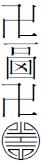

此回宜分二回方妥。〔一〕
此回宜分二回方妥。〔一〕
寶玉係諸艶之冠，故大觀園對額必得玉兄題跋，且暫題燈匾聯上，再請賜題。此千妥萬當之章法。
詩曰：
豪華雖足羨，離別却難堪。博得虛名在，誰人識苦甘？ 好詩，全是諷刺。近之諺云：「又要馬兒好，又要馬兒不吃草。」真駡盡無厭貪痴之輩。
好詩，全是諷刺。近之諺云：「又要馬兒好，又要馬兒不吃草。」真駡盡無厭貪痴之輩。
話說秦鍾既死，寶玉痛哭不已，李貴等好容易勸解半日方住，歸時猶是凄惻哀痛。賈母幫了幾十両銀子，外又另備奠儀，寶玉去弔紙。七日後便送殯掩埋了，別無述記。只有寶玉日日思慕感悼，然亦無可如何了。每於此等文後便用此語作結，是板定大章法，亦是此書大旨。
又不知歷幾何時，年表如此寫，亦妙！ 
 慣用此等章法。這日賈珍等來回賈政：「園內工程俱已告竣，大老爺已瞧過了，只等老爺瞧了，或有不妥之處，再行改造，好題匾額對聯的。」賈政聽了，沉思一回，說道：「這匾額對聯倒是一件難事。論理該請貴妃賜題纔是，然貴妃若不親睹其景，大約亦必不肯妄擬；若直待貴妃遊幸過再請題，偌大景致，若干亭榭，無字標題，也覺寥落無趣，任有花柳山水，也斷不能生色。」衆清客在旁笑答道：「老世翁所見極是。如今我們有個愚見：各處匾額對聯斷不可少，亦斷不可定名。如今且按其景致，或兩字、三字、四字，虛合其意，擬了出來，暫且做出燈匾聯懸了。待貴妃遊幸時，再請定名，豈不兩全？」賈政等聽了，都道：「所見不差。我們今日且看看去，只管題了，若妥當便用；不妥時，然後將雨村請來，令他再擬。」點雨村，照應前文。衆人笑道：「老爺今日一擬定佳，何必又待雨村。」賈政笑道：「你們不知，我自幼於花鳥山水題咏上就平平；是紗帽頭口氣。如今上了年紀，且案牘勞煩，於這怡情悅性文章上更生疏了，縱擬了出來，不免迂腐古板，反不能使花柳園亭生色，似不妥協，反沒意思。」
慣用此等章法。這日賈珍等來回賈政：「園內工程俱已告竣，大老爺已瞧過了，只等老爺瞧了，或有不妥之處，再行改造，好題匾額對聯的。」賈政聽了，沉思一回，說道：「這匾額對聯倒是一件難事。論理該請貴妃賜題纔是，然貴妃若不親睹其景，大約亦必不肯妄擬；若直待貴妃遊幸過再請題，偌大景致，若干亭榭，無字標題，也覺寥落無趣，任有花柳山水，也斷不能生色。」衆清客在旁笑答道：「老世翁所見極是。如今我們有個愚見：各處匾額對聯斷不可少，亦斷不可定名。如今且按其景致，或兩字、三字、四字，虛合其意，擬了出來，暫且做出燈匾聯懸了。待貴妃遊幸時，再請定名，豈不兩全？」賈政等聽了，都道：「所見不差。我們今日且看看去，只管題了，若妥當便用；不妥時，然後將雨村請來，令他再擬。」點雨村，照應前文。衆人笑道：「老爺今日一擬定佳，何必又待雨村。」賈政笑道：「你們不知，我自幼於花鳥山水題咏上就平平；是紗帽頭口氣。如今上了年紀，且案牘勞煩，於這怡情悅性文章上更生疏了，縱擬了出來，不免迂腐古板，反不能使花柳園亭生色，似不妥協，反沒意思。」 政老情字如此寫。壬午季春。畸笏。衆清客笑道：「這也無妨。我們大家看了公擬，各舉其長，優則存之，劣則删之，未為不可。」賈政道：「此論極是。且喜今日天氣和暖，大家去逛逛音光，字去聲，出《諧聲字箋》。。」說著起身，引衆人前往。
政老情字如此寫。壬午季春。畸笏。衆清客笑道：「這也無妨。我們大家看了公擬，各舉其長，優則存之，劣則删之，未為不可。」賈政道：「此論極是。且喜今日天氣和暖，大家去逛逛音光，字去聲，出《諧聲字箋》。。」說著起身，引衆人前往。
賈珍先去園中知會衆人。可巧近日寶玉因思念秦鍾，憂戚不盡，賈母常命人帶他到園中來戲耍。現成榫楔，一絲不費力。若特喚出寶玉來，則成何文字？此時亦纔進去，忽見賈珍走來，向他笑道：「你還不出去，老爺就來了。」寶玉聽了，帶著奶娘小厮們，一溜煙就出園來。不肖子弟來看形容。余初看之，不覺怒焉，蓋謂作者形容余幼年往事，因思彼亦自寫其照，何獨余哉？信筆書之，供諸大衆同一發笑。方轉過彎，頂頭賈政引衆客來了，躲之不及，只得一邊站了。賈政近日因聞得塾掌稱贊寶玉專能對對聯，雖不喜讀書，偏倒有些歪才情似的， 如此順筆寫來，然却是寶玉正傳。今日偶然撞見這機會，便命他跟來。如此偶然方妙，若特特喚來題額，真不成文矣。寶玉只得隨往，尚不知何意。
如此順筆寫來，然却是寶玉正傳。今日偶然撞見這機會，便命他跟來。如此偶然方妙，若特特喚來題額，真不成文矣。寶玉只得隨往，尚不知何意。
賈政剛至園門前，只見賈珍帶領許多執事人來，一旁侍立。賈政道：「你且把園門都關上，我們先瞧了外面再進去。」是行家看法。賈珍聽說，命人將門關了。賈政先秉正看門。只見正門五間，上面桶瓦泥鰍脊；那門欄窗槅，皆是細雕新鮮花樣，並無朱粉塗飾；一色水磨群墻，門雅，墻雅，不落俗套。下面白石臺磯，鑿成西番草花樣。左右一望，皆雪白粉墻，下面虎皮石，隨勢砌去，果然不落富麗俗套，自是歡喜。遂命開門，只見迎門一帶翠嶂擋在前面。掩隱的好。衆清客都道：「好山，好山！」賈政道：「非此一山，一進來園中所有之景悉入目中，則有何趣。」衆人道：「極是。非胸中大有邱壑，焉想及此。」說畢，往前一望，見白石崚嶒，想入其中，一時難辯方向。用「前」「後」「這邊」「那邊」等字，正是不辨東西。或如鬼怪，或如猛獸，縱橫拱立，上面苔蘚成斑，藤蘿掩映，曾用兩處舊有之園所改，故如此寫方可，細極。其中微露羊腸小徑，好景界，山子野精於此技。◇此是小徑，非行車輦道，今賈政原欲遊覽其景，故將此等處寫之。想其通路大道，自是堂堂冠冕氣象，無庸細寫者也。後於省親之時已得知矣。賈政道：「我們就從此小徑遊去，回來由那一邊出去，方可遍覽。」
說畢，命賈珍在前引導，自己扶了寶玉，逶迤進入山口。此回乃一部之綱緒，不得不細寫，尤不可不細批註。蓋後文十二釵書，出入來往之境，方不能錯亂，觀者亦如身臨足到矣。今賈政雖進的是正門，却行的是僻路，按此一大園，羊腸鳥道不止幾百十條，穿東度西，臨山過水，萬勿以今日賈政所行之徑，考其方向基址。故正殿反於末後寫之，足見未由大道而往，乃逶迤轉折而經也。 寶玉此刻已料定吉多凶少。抬頭忽見山上有鏡面白石一塊，新奇。正是迎面留題處。留題處便精，不必限定鑿金鏤銀一色惡俗，賴及棗梨之力。賈政回頭笑道：「諸公請看，此處題以何名方妙？」衆人聽說，也有說該題「叠翠」二字，也有說該題「錦嶂」的，又有說「賽香爐」的，又有說「小終南」的，種種名色，不止幾十個。原來衆客心中早知賈政要試寶玉的功業進益何如，只將些俗套來敷衍。寶玉亦料定此意。補明好。賈政聽了，便回頭命寶玉擬來。寶玉道：「嘗聞古人有云：『編新不如述舊，刻古終勝雕今。』未聞古人說此兩句，却又似有者。况此處並非主山正景，原無可題之處，不過是探景一進步耳。此論却是。莫如直書『曲徑通幽處』這句舊詩在上，倒還大方氣派。」衆人聽了，都贊道：「是極！二世兄天分高，才情遠，不似我們讀腐了書的。」賈政笑道：「不當謬獎。他年小，不過以一知充十用，取笑罷了。再俟選擬。」
說著，進入石洞來，只見佳木蘢葱，奇花熌灼，一帶清流，從花木深處曲折瀉於石隙之下。這水是人力引來做的。再進數步，漸向北邊，細極。後文所以云進賈母臥房後之角門，是諸釵日相來往之境也。後文又云，諸釵所居之處，只在西北一帶，最近賈母臥室之後，皆從此「北」字而來。平坦寬豁，兩邊飛樓插空，雕甍綉檻，皆隱於山坳樹杪之間。俯而視之，則清溪瀉雪，石磴穿雲，前已寫山至寬處，此則由低處至高處，各景皆遍。白石為欄，環抱池沿，石橋三港，獸面啣吐。橋上有亭。前已寫山寫石，今則寫池寫樓，各景皆遍。賈政與諸人上了亭子，倚欄坐了，此亭大抵四通八達，為諸小徑之咽喉要路。因問：「諸公以何題此？」諸人都道：「當日歐陽公《醉翁亭記》有云：『有亭翼然。』就名『翼然』。」賈政笑道：「『翼然』雖佳，但此亭壓水而成，還須偏於水題方稱。依我拙裁，歐陽公之『瀉出於兩峰之間』，竟用他這一個『瀉』字。」有一客道：「是極，是極。竟是『瀉玉』二字妙。」賈政拈髯尋思，因抬頭見寶玉侍側，便笑命他也擬一個來。寶玉聽說，連忙回道：「老爺方纔所議已是。但是如今追究了去，似乎當日歐陽公題釀泉用一『瀉』字則妥，今日此泉若亦用『瀉』字，則覺不妥。况此處雖為省親駐蹕別墅，亦當入於應制之例，用此等字眼，亦覺粗陋不雅。求再擬較此蘊藉含蓄者。」賈政笑道：「諸公聽此論若如？方纔衆人編新，你又說不如述古；如今我們述古，你又說粗陋不妥。你且說你的來我聽。」寶玉道：「有用『瀉玉』二字，則莫若『沁芳』真新雅。二字，果然。豈不新雅？」賈政拈髯點頭不語。六字是嚴父大露悅容也。壬午春。衆人都忙迎合，贊寶玉才情不凡。賈政道：「匾上二字容易，再作一副七言對聯來。」寶玉聽說，立於亭上，四顧一望，便機上心來，乃唸道：
繞堤柳借三篙翠，要緊，貼切水字。
隔岸花分一脉香。恰極，工極！綺靡秀媚，香奩正體。
賈政聽了，點頭微笑。衆人先稱贊不已。
於是出亭過池，一山一石，一花一木，莫不著意觀覽。渾寫兩句，已見經行處愈遠，更至北一路矣。忽抬頭看見前面一帶粉垣，裡面數楹修舍，有千百竿翠竹遮映。衆人都道：「好個所在！」此方可為顰兒之居。於是大家進入，只見入門便是曲折遊廊，不犯超手遊廊。階下石子漫成甬路。上面小小兩三間房舍，一明兩暗，裡面都是合著地步打就的床几椅案。從裡間房內又得一小門，出去則是後院，有大茉莉花兼著芭蕉。又有兩間小小退步。後院墻下忽開一隙，得泉一派，開溝僅尺許，灌入墻內，繞階緣屋至前院，盤旋竹下而出。
賈政笑道：「這一處一處。還罷了。若能月夜坐此窗下讀書，不枉虛生一世。」說畢，看著寶玉，唬的寶玉忙垂了頭。點一筆。衆客忙用話開釋，客不可不有。又說道：「此處的匾該題四個字。」賈政笑問：「那四字？」一個道是「淇水遺風。」賈政道：「俗。」余亦如此。又一個是「睢園雅跡」。賈政道：「也俗。」賈珍笑道：「還是寶兄弟擬一個來。」又換一章法。壬午春。賈政道：「他未曾作，先要議論人家的好歹，可見就是個輕薄人。」知子者莫如父。衆客道：「議論的極是，其奈他何。」賈政忙道：「休如此縱了他。」因命他道：「今日任你狂為亂道，先設議論來，然後方許你作。又一格式，不然，不獨死板，且亦大失嚴父素體。 於作詩文時，雖政老亦有如此令旨，可知嚴父亦無可奈何也。不學紈絝來看。畸笏。方纔衆人說的，可有使得的？」寶玉見問，答道：「都似不妥。」明知是故意要他搬駁議論，落得肆行施展。賈政冷笑道：「怎麽不妥？」寶玉道：「這是第一處行幸之處，必須頌聖方可。若用四字的匾，又有古人現成的，何必再作。」賈政道：「難道『淇水』『睢園』不是古人的？」寶玉道：「這太板腐了。莫若『有鳳來儀』四字。」果然，妙在雙關暗合。衆人都哄然叫妙。賈政點頭道：「畜生，畜生，可謂『管窺蠡測』矣。」因命：「再題一聯來。」寶玉便唸道：
寶鼎茶閒煙尚綠，「尚」字妙極！不必說竹，然恰恰是竹中精舍。
幽窗棋罷指猶凉。「猶」字妙！「尚綠」、「猶凉」四字，便如置身於森森萬竿之中。
賈政搖頭說道：「也未見長。」說畢，引衆人出來。
方欲走時，忽又想起一事來，不板。因問賈珍道：「這些院落房宇並几案桌椅都算有了，此一頓少不得。還有那些帳幔簾子並陳設玩器古董，可也都是一處一處合式配就的？」大篇長文，不如此頓，則成何話說？賈珍回道：「那陳設的東西早已添了許多，自然臨期合式陳設。帳幔簾子，昨日聽見璉兄弟說，還不全。那原是一起工程之時就畫了各處的圖樣，量準尺寸，就打發人辦去的。想必昨日得了一半。」補出近日忙冗，千頭萬緒景况。賈政聽了，便知此事不是賈珍的首尾，便令人去喚賈璉。
一時賈璉趕來。寫出忙冗景况。賈政問他共有幾種，現今得了幾種，尚欠幾種。賈璉見問，忙向靴桶內取靴掖內裝的一個紙折略節來，細極！從頭至尾，誓不作一筆安逸苟且之筆。看了一看，回道：「妝一字一句。、蟒、綉、堆，刻絲、彈墨二字一句。，並各色綢綾大小幔子一百二十架，昨日得了八十架，下欠四十架。簾子二百挂，昨日俱得了。外有猩猩氈簾二百挂，〔二〕金絲藤紅漆竹簾二百挂，墨漆竹簾二百挂，五彩綫絡盤花簾二百挂，每樣得了一半，也不過秋天都全了。椅搭、桌圍、床裙、桌套，每分一千二百件，也有了。」
一面走，一面說，是極！倏爾青山斜阻。「斜」字細，不必拘定方向。諸釵所居之處，若稻香村、瀟湘館、怡紅院、秋爽齋、蘅蕪苑等，都相隔不遠，究竟只在一隅。然處置得巧妙，使人見其千丘萬壑，恍然不知所窮，所謂會心處不在乎遠。大抵一山一水，一木一石，全在人之穿插佈置耳。轉過山懷中，隱隱露出一帶黃泥築就矮墻，墻頭上皆用稻莖掩護。配的好！有幾百株杏花，如噴火蒸霞一般。裡面數楹茅屋。外面却是桑、榆、槿、柘，各色樹稚新條，隨其曲折，編就兩溜青籬。籬外山坡之下，有一土井，旁有桔槔轆轤之屬。下面分畦列畝，佳蔬菜花，漫然無際。閱至此，又笑別部小說中，一萬個花園中，皆是牡丹亭、芍藥圃、雕欄畫棟、瓊榭朱樓，略不見差別。
賈政笑道：「倒是此處有些道理。固然係人力穿鑿，此時一見，未免勾引起我歸農之意。極熱中偏以冷筆點之，所以為妙。我們且進去歇息歇息。」說畢，方欲進籬門去，忽見路旁有一石碣，亦為留題之備。更恰當。若有懸額之處，或再用鏡面石，豈復成文哉？忽想到「石碣」二字，又託出許多郊野氣色來，一肚皮千丘萬壑，只在這石碣上。 真妙真新。衆人笑道：「更妙，更妙！此處若懸匾待題，則田舍家風一洗盡矣。立此一碣，又覺生色許多，非范石湖田家之咏不足以盡其妙。」客不可不養。 贊得是，這個篾翁有些意思。賈政道：「諸公請題。」衆人道：「方纔世兄有云，『編新不如述舊』，此處古人已道盡矣，莫若直書『杏花村』妙極。」賈政聽了，笑向賈珍道：「正虧提醒了我。此處都妙極，只是還少一個酒幌，明日竟作一個，不必華麗，就依外面村莊的式樣作來，用竹竿挑在樹梢。」賈珍答應了，又回道：「此處竟還不可養別的雀鳥，只是買些鵝鴨鶏類，纔都相稱了。」賈政與衆人都道：「更妙。」賈政又向衆人道：「『杏花村』固佳，只是犯了正名，村名直待請名方可。」衆客都道：「是呀。如今虛的，便是什麽字樣好？」大家想著，寶玉却等不得了，又換一格方不板。也不等賈政的命，忘情有趣。便說道：「舊詩有云：『紅杏梢頭挂酒旗。』如今莫若『杏帘在望』妙在一「在」字。四字。」衆人都道：「好個『在望』！又暗合『杏花村』意。」寶玉冷笑道：忘情最妙。「村名若用『杏花』二字，則俗陋不堪了。又有古人詩云：『柴門臨水稻花香。』何不就用『稻香村』的妙？」衆人聽了，亦發哄聲拍手道：「妙！」賈政一聲喝斷：「無知的業障！愛之至，喜之至，故作此語。◇作者至此，寧不笑殺？壬午春。你能知道幾個古人，能記得幾首熟詩，也敢在老先生前賣弄！你方纔那些胡說的，不過是試你的清濁，取笑而已，你就認真了！」說著，引衆人步入茆堂，裡面紙窗木榻，富貴氣象一洗皆盡。賈政心中自是喜歡，却瞅寶玉道：「此處如何？」衆人見問，都忙悄悄的推寶玉，教他說好。寶玉不聽人言，便應聲道：「不及『有鳳來儀』多矣。」公然自定名，妙！賈政聽了道：「無知的蠢物！你只知朱樓畫棟，惡賴富麗為佳，那裡知道這清幽氣象。終是不讀書之過！」寶玉忙答道：「老爺教訓的固是，但古人常云『天然』二字，不知何意？」
衆人見寶玉牛心，都怪他呆痴不改。今見問「天然」二字，衆人忙道：「別的都明白，為何連『天然』不知？『天然』者，天之自然而有，非人力之所成也。」寶玉道：「却又來！此處置一田莊，分明見得人力穿鑿扭捏而成。遠無鄰村，近不負郭，背山山無脉，臨水水無源，高無隱寺之塔，下無通市之橋，峭然孤出，似非大觀。爭似先處有自然之理，得自然之氣，雖種竹引泉，亦不傷於穿鑿。古人云『天然圖畫』四字，正畏非其地而强為其地，非其山而强為其山，雖百般精而終不相宜……」未及說完，賈政氣的喝命：「叉出去！」剛出去，又喝命：「回來！」命再題一聯：「若不通，一併打嘴！」所謂「奈何他不得」也，呵呵！畸笏。寶玉只得唸道：
新漲綠添浣葛處，採《詩》頌聖最恰當。
好雲香護採芹人。採《風》採《雅》都恰當。然冠冕中又不失香奩格調。
賈政聽了，搖頭說：「更不好。」一面引人出來，轉過山坡，穿花度柳，撫石依泉，過了荼蘼架，再入木香棚，越牡丹亭，度芍藥圃，入薔薇院，出芭蕉塢，盤旋曲折。略用套語一束，與前頓破格不板。忽聞水聲潺湲，瀉出石洞，上則蘿薜倒垂，下則落花浮蕩。仍是沁芳溪矣，究竟基址不大，全是曲折掩隱之巧可知。衆人都道：「好景，好景！」賈政道：「諸公題以何名？」衆人道：「再不必擬了，恰恰乎是『武陵源』三個字。」賈政笑道：「又落實了，而且陳舊。」衆人笑道：「不然就用『秦人舊舍』四字也罷了。」寶玉道：「這越發過露了。『秦人舊舍』說避亂之意，如何使得？莫若『蓼汀花漵』四字。」賈政聽了，更批胡說。
於是要進港洞時，又想起有船無船。賈珍道：「採蓮船共四隻，座船一隻，如今尚未造成。」賈政笑道：「可惜不得入了。」賈珍道：「從山上盤道亦可進去。」說畢，在前導引，大家攀藤撫樹過去。只見水上落花愈多，其水愈清，溶溶蕩蕩，曲折縈紆。池邊兩行垂柳，雜著桃杏，遮天蔽日，真無一些塵土。忽見柳陰中又露出一個折帶朱欄板橋來，此處纔見一朱粉字樣。綠柳紅橋，此等點綴亦不可少。後文寫蘆雪广則曰蜂腰板橋，都施之得宜，非一幅死稿也。度過橋去，諸路可通，補四字，細極！不然後文寶釵來往，則將日日爬山越嶺矣。記清此處，則知後文寶玉所行常徑，非此處也。便見一所清凉瓦舍，一色水磨磚墻，清瓦花堵。那大主山所分之脉，兩見大主山，稻香村又云懷中，不寫主山，而主山處處映帶連絡不斷可知矣。皆穿墻而過。好想。
賈政道：「此處這所房子，無味的很。」先故頓此一筆，使後文愈覺生色，未揚先抑之法。蓋釵、顰對峙有甚難寫者。因而步入門時，忽迎面突出插天的大玲瓏山石來，四面群繞各式石塊，竟把裡面所有房屋悉皆遮住，而且一株花木也無。更奇妙！只見許多異草：或有牽藤的，或有引蔓的，或垂山巔，或穿石隙，甚至垂檐繞柱，縈砌盤階，更妙！或如翠帶飄搖，或如金繩盤屈，或實若丹砂，或花如金桂，味芬氣馥，非花香之可比。前三處皆還在人意之中，此一處則今古書中未見之工程也。連用幾「或」字，是從昌黎《南山詩》中學得。賈政不禁道：「有趣！前有「無味」二字，及云「有趣」二字，更覺生色，更覺重大。只是不大認識。」有的說：「是薜荔藤蘿。」賈政道：「薜荔藤蘿不得如此異香。」寶玉道：「果然不是。這些之中也有藤蘿薜荔，那香的是杜若蘅蕪，那一種大約是茝蘭，這一種大約是清葛，那一種是金䔲草，這一種是玉蕗藤，紅的自然是紫芸，綠的定是青芷。金䔲草，見《字彙》。玉蕗，見《楚辭》「菎蕗雜於黀蒸」。茝、葛、芸、芷，皆不必註，見者太多。此書中異物太多，有人生之未聞未見者，然實係所有之物，或名差理同者亦有之。想來《離騷》《文選》等書上所有的那些異草，也有叫作什麽藿蒳薑蕁〔三〕的，也有叫什麽綸組紫絳的，還有石帆、水松、扶留等樣，左太沖《吳都賦》。又有叫什麽綠荑的，還有什麽丹椒、蘼蕪、風連。以上《蜀都賦》。如今年深歲改，人不能識，故皆像形奪名，漸漸的喚差了，也是有的。」自實註一筆，妙！未及說完，賈政喝道：「誰問你來！」又一樣止法。唬的寶玉倒退，不敢再說。
賈政因見兩邊俱是超手遊廊，便順著遊廊步入。只見上面五間清厦連著捲棚，四面出廊，綠窗油壁，更比前幾處清雅不同。賈政嘆道：「此軒中煮茶操琴，亦不必再焚名香矣。前二處，一曰「月下讀書」，一曰「勾引起歸農之意」，此則「操琴煮茶」，斷語皆妙。此造已出意外，諸公必有佳作新題以顔其額，方不負此。」衆人笑道：「再莫若『蘭風蕙露』貼切了。」賈政道：「也只好用這四字。其聯若何？」一人道：「我倒想了一對，大家批削改正。」唸道是：
麝蘭芳靄斜陽院，
杜若香飄明月洲。
衆人道：「妙則妙矣，只是『斜陽』二字不妥。」那人道：「古人詩云：『蘼蕪滿手泣斜輝』。」衆人道：「頽喪，頽喪。」又一人道：「我也有一聯，諸公評閱評閱。」因唸道：
三徑香風飄玉蕙，
一庭明月照金蘭。此二聯皆不過為釣寶玉之餌，不必認真批評。
賈政拈髯沉吟，意欲也題一聯。忽抬頭見寶玉在旁不敢則聲，因喝道：「怎麽你應說話時又不說了？還要等人請教你不成！」寶玉聽說，便回道：「此處並沒有什麽『蘭麝』、『明月』、『洲渚』之類，若要這樣著跡說來，就題二百聯也不能完。」賈政道：「誰按著你的頭，叫你必定說這些字樣呢？」寶玉道：「如此說，匾上則莫若『蘅芷清芬』四字。對聯則是：
吟成豆蔻才猶艶，
睡足酴醿夢也香。」實佳。
賈政笑道：「這是套的『書成蕉葉文猶綠』，不足為奇。」衆客道：「李太白『鳳凰臺』之作，全套『黃鶴樓』，這一位篾翁更有意思。只要套得妙。如今細評起來，方纔這一聯，竟比『書成蕉葉』尤覺幽嫻活潑。視『書成』之句，竟似套此而來。」賈政笑說：「豈有此理！」
說著，大家出來。行不多遠，則見崇閣巍峨，層樓高起，面面琳宮合抱，迢迢複道縈紆，青松拂檐，玉欄繞砌，金輝獸面，彩煥螭頭。賈政道：「這是正殿了。想來此殿在園之正中。按園不是殿方之基，西北一帶通賈母臥室後，可知西北一帶是多寬出一帶來的，諸釵始便於行也。只是太富麗了些。」衆人都道：「要如此方是。雖然貴妃崇節尚儉，天性惡繁悅樸，寫出賈妃身分天性。然今日之尊，禮儀如此，不為過也。」一面說，一面走，只見正面正面，細。現出一座玉石牌坊來，上面龍蟠螭護，玲瓏鑿就。賈政道：「此處書以何文？」衆人道：「必是『蓬萊仙境』方妙。」賈政搖頭不語。寶玉見了這個所在，心中忽有所動，尋思起來，一路順順逆逆，已成千丘萬壑之景，若不有此一段大江截住，直成一盆景矣。作者從何落筆著想！倒像那裡曾見過的一般，却一時想不起那年月日的事了。仍歸於葫蘆一夢之太虛玄境。賈政又命他作題，寶玉只顧細思前景，全無心於此了。衆人不知其意，只當他受了這半日的折磨，精神耗散，才盡辭窮了；再要考難逼迫，著了急，或生出事來，倒不便。遂忙都勸賈政：「罷，罷，明日再題罷了。」賈政心中也怕賈母不放心，一筆不漏。遂冷笑道：「你這畜生，也竟有不能之時了。也罷，限你一日，明日若再不能，我定不饒。這是要緊之處，更要好生作來！」
說著，引人出來，再一觀望，原來自進門起，所行至此，纔遊了十之五六。總住，妙！伏下後文所補等處。若都入此回寫完，不獨太繁，使後文冷落，亦且非《石頭記》之筆。又值人來回，有雨村處遣人來回話。又一緊收，不能終局也。此處漸漸寫雨村親切，正為後文地步。伏脉千里，橫雲斷嶺法。賈政笑道：「此數處不能遊了。雖如此，到底從那一邊出去，縱不能細觀，也可稍覽。」說著，引衆客行來，至一大橋前，水如晶簾一般奔入。原來這橋便是通外河之閘，引泉而入者。寫出水源，要緊之極！近之畫家著意於山，苦不講水。又造園囿者，唯知弄莽憨頑石、壅笨冢，輒謂之景，皆不知水為先著。此園大概一描，處處未嘗離水，蓋又未寫明水之從來，今終補出，精細之至！賈政因問：「此閘何名？」寶玉道：「此乃沁芳泉之正源，就名『沁芳閘』。」究竟只一脉，賴人力引導之功，園不易造，景非泛寫。賈政道：「胡說！偏不用『沁芳』二字。」此以下皆係文終之餘波，收的方不突。
於是一路行來，或清堂茅舍，或堆石為垣，或編花為牖，或山下得幽尼佛寺，或林中藏女道丹房，或長廊曲洞，或方厦圓亭，賈政皆不及進去。伏下櫳翠庵、蘆雪广、凸碧山莊、凹晶溪館、暖香塢等諸處，於後文一段一段補之，方得雲龍作雨之勢。因說半日腿酸，未嘗歇息，忽又見前面又露出一所院落來，問卿此居，比大荒山若何？賈政笑道：「到此可要進去歇息歇息了。」說著，一逕引人繞著碧桃花，怡紅院如此寫來，用無意之筆，却是極精細文字。穿過一層竹籬花障編就的月洞門，未寫其居，先寫其境。俄見粉墻環護，綠柳周垂。與「萬竿修竹」遙映。賈政與衆人進去，一入門，兩邊都是遊廊相接。院中點襯幾塊山石，一邊種著數本芭蕉；那一邊乃是一顆西府海棠，其勢若傘，絲垂翠縷，葩吐丹砂。衆人贊道：「好花，好花！從來也見過許多海棠，那裡有這樣妙的。」賈政道：「這叫作『女兒棠』，妙名。乃是外國之種。俗傳係出『女兒國』中，出自政老口中，奇特之至！云彼國此種最盛，亦荒唐不經之說罷了。」政老應如此語。衆人笑道：「然雖不經，如何此名傳久了？」寶玉道：「大約騷人咏士，以花之色紅暈若施脂，輕弱似扶病，體貼的切，故形容的妙。 十字若海棠有知，必深深謝之。大近乎閨閣風度，所以以『女兒』命名。想因被世間俗惡聽了，他便以野史纂入為證，以俗傳俗，以訛傳訛，都認真了。」不獨此花，近之謬傳者不少，不能悉道，只借此花數語駁盡。衆人都搖身贊妙。
一面說話，一面都在廊外抱厦下打就的榻上坐了。至階又至檐，不肯輕易寫過。賈政因問：「想幾個什麽新鮮字來題此？」一客道：「『蕉鶴』二字最妙。」又一個道：「『崇光泛彩』方妙。」賈政與衆人都道：「好個『崇光泛彩』！」寶玉也道：「妙極。」又嘆：「只是可惜了。」衆人問：「如何可惜？」寶玉道：「此處蕉棠兩植，其意暗蓄『紅』『綠』二字在內。若只說蕉，則棠無著落；若只說棠，蕉亦無著落。固有蕉無棠不可，有棠無蕉更不可。」賈政道：「依你如何？」寶玉道：「依我，題『紅香綠玉』四字，方兩全其妙。」賈政搖頭道：「不好，不好！」
說著，引人進入房內。只見這幾間房內收拾的與別處不同，特為青埂峰下凄凉與別處不同耳。竟分不出間隔來的，新奇希見之式。原來四面皆是雕空玲瓏木板，或「流雲百蝠」，或「歲寒三友」，或山水人物，或翎毛花卉，或集錦，或博古，花樣周全之極！然必用下文者，正是作者無聊，撰出新異筆墨，使觀者眼目一新。所謂集小說之大成，遊戲筆墨，雕蟲之技，無所不備，可謂善戲者矣。又供諸人同同一戲，妙極！或

，前金、玉篆文是可考正篆，今則從俗花樣，真是醒睡魔。其中詩詞雅謎以及各種風俗學問，一概不必究，只據此等處便是一絕。各種花樣，皆是名手雕鏤，五彩銷金嵌寶的。至此方見一朱彩之處，亦必如此式方可。可笑近之園庭，行動便以粉油從事。一槅一槅，或有貯書處，或有設鼎處，或安置筆硯處，或供花設瓶、安放盆景處，其槅各式各樣，或天圓地方，或葵花蕉葉，或連環半璧。真是花團錦簇，剔透玲瓏。倏爾五色紗糊就，竟係小窗；倏爾彩綾輕覆，竟係幽戶。精工之極！且滿墻滿壁，皆係隨依古董玩器之形摳成的槽子。諸如琴、劍、懸瓶、懸於壁上之瓶也。桌屏之類，雖懸於壁，却都是與壁相平的。皆係人意想不到、目所未見之文。若云擬編虛想出來，焉能如此？◇一段極清極細。後文鴛鴦瓶、紫瑪瑙碟、西洋酒、(令)[金]自行船等文，不必細表。衆人都贊：「好精緻想頭！難為怎麽想來？」誰不如此贊？
原來賈政等走了進來，未進兩層，便都迷了舊路，左瞧也有門可通，右瞧又有窗暫隔，及到了跟前，又被一架書擋住。回頭再走，又有窗紗明透，門徑可行；及至門前，忽見迎面也進來了一群人，都與自己形相一樣，——却是一架玻璃大鏡相照。及轉過鏡去，石兄迷否？一發見門子多了。所謂「(投投)[頭頭]是道」是也。賈珍笑道：「老爺隨我來。從這門出去，便是後院，從後院出去，倒比先近了。」說著，又轉了兩層紗厨錦槅，果得一門出去，此方便門也。院中滿架薔薇、寶相。轉過花障，則見清溪前阻。又寫水。衆人咤異：「這股水又是從何而來？」賈珍遙指道：「原從那閘起流至那洞口，從東北山坳裡引到那村莊裡，又開一道岔口，引到西南上，共總流到這裡，仍舊合在一處，於怡紅院總一園之水，是書中大立意。從那墻下出去。」衆人聽了，都道：「神妙之極！」說著，忽見大山阻路。衆人都道：「迷了路了。」賈珍笑道：「隨我來。」仍在前導引，衆人隨他，直由山脚邊忽一轉，便是平坦寬闊大路，衆善歸緣，自然有平坦大道。豁然大門前見。可見前進來是小路徑，此云忽一轉，便是平坦寬闊之正甬路也，細極！衆人都道：「有趣，有趣，真搜神奪巧之至！」於是大家出來。以上可當《大觀園記》。
那寶玉一心只記挂著裡邊，又不見賈政吩咐，少不得跟到書房。賈政忽想起他來，方喝道：「你還不去？難道還逛不足！冤哉冤哉！也不想逛了這半日，老太太必懸挂著。快進去，疼你也白疼了。」如此去法，大家嚴父風範，無家法者不知。寶玉聽說，方退了出來。
 總評：好將富貴回頭看，總有文章如意難。零落機緣君記去，黃金萬斗大觀攤。
總評：好將富貴回頭看，總有文章如意難。零落機緣君記去，黃金萬斗大觀攤。
〔一〕按：己、庚本第十七至十八回未分回，直接題為「第十七回至十八回」，其餘諸本則均已分回。為兼顧戚、蒙本的回前回後批，本校本仍予分回。
〔二〕列、舒、辰、楊諸本此處多「湘妃竹簾二百挂」一句。
〔三〕《文選·左思〈吳都賦〉》「薑蕁」作「薑彙」。但本書引用古籍多有改動者，此處作「薑蕁」亦通，故不校改。
本章完!